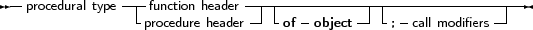
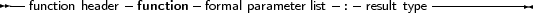
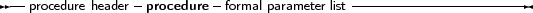
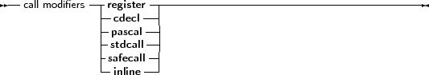

Free Pascal has support for procedural types, although it differs a little from the Turbo Pascal or Delphiimplementation of them. The type declaration remains the same, as can be seen in the following syntax diagram:
_________________________________________________________________________________________________________Procedural types




___________________________________________________________________
For a description of formal parameter lists, see chapter 11, page 425. The two following examples are valid type declarations:
Type TOneArg = Procedure (Var X : integer);
TNoArg = Function : Real; var proc : TOneArg; func : TNoArg; |
One can assign the following values to a procedural type variable:
Given these declarations, the following assignments are valid:
Procedure printit (Var X : Integer);
begin WriteLn (x); end; ... Proc := @printit; Func := @Pi; |
From this example, the difference with Turbo Pascal is clear: In Turbo Pascal it isn’t necessary to use the address operator (@) when assigning a procedural type variable, whereas in Free Pascal it is required. In case the -MDelphi or -MTP switches are used, the address operator can be dropped.
Remark: The modifiers concerning the calling conventions must be the same as the declaration; i.e. the following code would give an error:
Type TOneArgCcall = Procedure (Var X : integer);cdecl;
var proc : TOneArgCcall; Procedure printit (Var X : Integer); begin WriteLn (x); end; begin Proc := @printit; end. |
Because the TOneArgCcall type is a procedure that uses the cdecl calling convention.